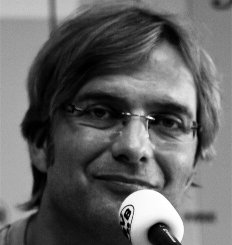
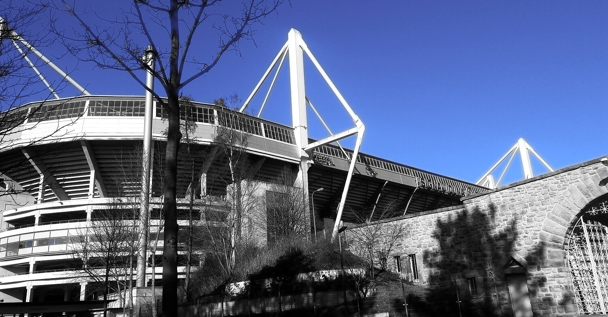
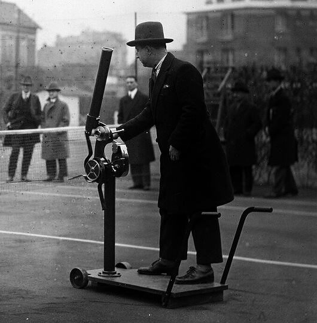
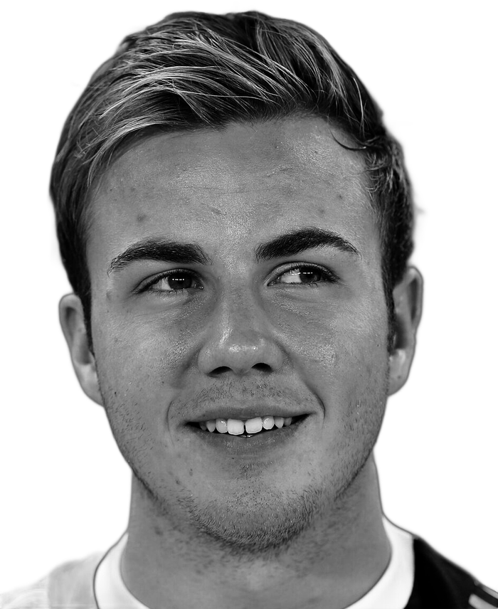

ENTRENADOR · DORTMUNDJ. KLOPP
JAULA · RECREACIÓN
Foto: Christopher Neundorf (2010) · atribución

DORTMUND · 2012
Foto: Moayad Abuawad (2018) · CC BY-SA 4.0 (modificada)
VISTO DESDE ARRIBA · RECREACIÓN

MÁQUINA DE LANZAR · TENIS · 1928
Foto: Agence Rol (1928) · dominio público
Fotos: Moayad Abuawad (CC BY-SA 4.0), Christopher Neundorf (atribución), Michael Kranewitter (CC BY-SA 3.0), Agence Rol (dominio público), vía Wikimedia Commons.
Jaula, casillas, recorte y balones: recreación.
RECORTE · RECREACIÓN
— J. Klopp (Ruhr Nachrichten)
Cita: Ruhr Nachrichten, vía ingenieur.de (2013)

JUGADOR · 2012M. GÖTZE
Foto: Michael Kranewitter (2012) · CC BY-SA 3.0 (modificada)